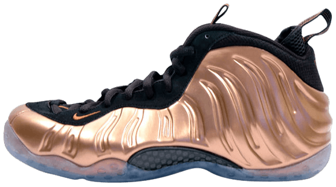

AIR FOAMPOSITE 1
DEBUTED IN 1997, THE FOAMPOSITE WAS A SNEAKER AHEAD OF ITS TIME. THIS WAS THE FIRST SNEAKER TO USE NIKE’S FOAMPOSITE TECHNOLOGY. IT WAS FIRST SEEN ON FOOT IN THE NBA BY PENNY HARDAWAY AND IT WAS HIS SIGNATURE SHOE. WHILE THE FOAMPOSITE DEBUTED WITH A SINGULAR COLORWAY, MORE CAME IN 2007 WHEN RE-RELEASES OF THIS NOW ICONIC SNEAKER BEGAN.
INITIAL RELEASE: 1997
RELEASES: 68
COLORWAY: DIRTY COPPER
CURRENT RESALE PRICE: $264 (GOAT)